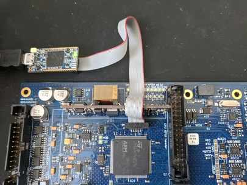

Overview
Stabilizer is a flexible tool designed for quantum physics experiments. Fundamentally, Stabilizer samples up two two analog input signals, performs digital signal processing internally, and then generates up to two output signals.
Stabilizer firmware supports run-time configuration of the internal signal processing algorithms, which allows for a wide variety of experimental uses, such as digital filter design or implementation of digital lockin schemes.
This documentation is intended to bring a user up to speed on using Stabilizer and the firmware provided by QUARTIQ and contributors.
Hardware
The Stabilizer hardware is managed via a separate repository. Some information about the hardware is gathered in the Stabilizer wiki. More detailed data, measurements, discussions, and tests have been posted in the Stabilizer issue tracker.

Stabilizer can be extended and coupled with a mezzanine board. One such mezzanine is the DDS upconversion/downconversion frontend Pounder. The Pounder hardware is managed via a separate repository, again with wiki and issue tracker.
Applications
This firmware offers a library of hardware and software functionality targeting the use of the Stabilizer hardware in various digital signal processing applications commonly occurring in Quantum Technology.
It provides abstractions over the fast analog inputs and outputs, time stamping, Pounder DDS interfaces and a collection of tailored and optimized digital signal processing algorithms (IIR, FIR, Lockin, PLL, reciprocal PLL, Unwrapper, Lowpass, Cosine-Sine, Atan2) in the idsp crate.
An application, which is the compiled firmware running on the device, can compose and configure these hardware and software components to implement different use cases.
Several applications are provided by default.
The following documentation links contain the application-specific settings and telemetry information.
| Application | Description |
|---|---|
dual-iir | Two channel biquad IIR filter |
lockin | Lockin amplifier support various various reference sources |
Library Documentation
The Stabilizer library docs contain documentation for common components used in all Stabilizer applications.
The Stabilizer library documentation is available here.
Getting Started
There are a number of steps that must be completed when first getting started with Stabilizer.
- Update the Stabilizer Application
- Build the application by compiling the source code.
- Upload the application and programming it onto the device.
- Set up MQTT for telemetry and configuration.
The following sections will walk you through completing each of these steps.
Update Stabilizer
Firmware is compiled and loaded onto Stabilizer to program a specific application.
After receiving the Stabilizer hardware, you will need to flash firmware onto the device to use your desired application.
Building Firmware
- Clone or download stabilizer
git clone https://github.com/quartiq/stabilizer
-
Get rustup
- The minimum supported Rust version (MSRV) is 1.52.0
-
Install target support
rustup target add thumbv7em-none-eabihf
- Build Firmware with an optionally-specified MQTT broker IP.
# Bash
BROKER="10.34.16.10" cargo build --release
# Powershell
# Note: This sets the broker for all future builds as well.
$env:BROKER='10.34.16.10'; cargo build --release
Uploading Firmware
Firmware is loaded onto stabilizer utilizing an ST-Link (V2-1 or greater) JTAG programmer.
- If a programmer is not available, please see the alternative method
Ensure the ST-Link is connected to Stabilizer as shown below.

All of the instructions below assume you have properly built the firmware.
Substitute dual-iir below with the application name you are flashing.
- Install cargo-binutils
cargo install cargo-binutils
rustup component add llvm-tools-preview
- Generate the binary file
# Bash
BROKER="10.34.16.10" cargo objcopy --release --bin dual-iir -- -O binary dual-iir.bin
# Powershell
$env:BROKER='10.34.16.10'; cargo objcopy --release --bin dual-iir -- -O binary dual-iir.bin
- Copy
dual-iir.bininto the ST-Link drive on your computer.
Alternative: Using USB
If an ST-Link V2-1 or above is not available, you can upload firmware using a micro USB cable plugged in to the front of Stabilizer.
- Install the DFU USB tool
dfu-util - Connect to the Micro USB connector below the RJ45
- Short JC2/BOOT
- Perform the Device Firmware Upgrade (DFU)
dfu-util -a 0 -s 0x08000000:leave -D dual-iir.bin
Alternative: Firmware Development / Debug
The below instructions are useful for debugging or developing firmware
For an interactive flash experience with live logging, utilize probe-run as follows.
- Install
probe-run
cargo install probe-run
- Build and run firmware on the device
# Bash
BROKER="10.34.16.10" cargo run --release --bin dual-iir
# Powershell
$Env:BROKER='10.34.16.10'; cargo run --release --bin dual-iir
- When using debug (non
--release) mode, decrease the sampling frequency significantly. The added error checking code and missing optimizations may lead to the code missing deadlines and panicing.
Set up and test MQTT
Set up the Broker
Stabilizer requires an MQTT broker that supports MQTTv5. Mosquitto has been used during development, but any MQTTv5 broker is supported.
Note: Mosquitto version 1 only supports MQTTv3.1. If using Mosquitto, ensure version 2.0.0 or later is used.
Stabilizer utilizes a static IP address for broker configuration. Ensure the IP address was configured properly to point to your broker before continuing.
We recommend running Mosquitto through Docker to easily run Mosquitto on
Windows, Linux, and OSX. After docker has been installed, run the following command from
the stabilizer repository:
# Bash
docker run -p 1883:1883 --name mosquitto -v `pwd`/mosquitto.conf:/mosquitto/config/mosquitto.conf -v /mosquitto/data -v /mosquitto/log eclipse-mosquitto:2
# Powershell
docker run -p 1883:1883 --name mosquitto -v ${pwd}/mosquitto.conf:/mosquitto/config/mosquitto.conf -v /mosquitto/data -v /mosquitto/log eclipse-mosquitto:2
This command will create a container named mosquitto that can be stopped and started easily via
docker.
Test the Connection
Once your broker is running, test that Stabilizer is properly connected to it.
To do this, we will check that Stabilizer is reporting telemetry on the following topic:
dt/sinara/dual-iir/00-11-22-33-44-55/telemetry
Note: The telemetry topic will be different based on the programmed application and the MAC address of the device.
Download MQTT-Explorer to observe which topics have been posted to the Broker.

Note: Use the same broker address that you defined in the firmware for MQTT explorer.
Telemetry messages should come in approximately every 10 seconds when Stabilizer has connected to the broker. Once you observe incoming telemetry, Stabilizer has been properly configured and is operational.
Table of Contents
Miniconf Run-time Settings
Stabilizer supports run-time settings configuration using MQTT.
Settings can be stored in the MQTT broker so that they are automatically applied whenever Stabilizer reboots and connects. This is referred to as "retained" settings. Broker implementations may optionally store these retained settings as well such that they will be reapplied between restarts of the MQTT broker.
Settings are specific to a device. Any settings configured for one Stabilizer will not be applied to another. Disambiguation of devices is done by using Stabilizer's MAC address.
Settings are specific to an application. If two identical settings exist for two different applications, each application maintains its own independent value.
Installation
Install the Miniconf configuration utilities using a virtual environment:
python -m venv --system-site-packages vpy
# Refer to https://docs.python.org/3/tutorial/venv.html for more information on activating the
# virtual environment. This command is different on different platforms.
./vpy/Scripts/activate
Next, install prerequisite packages
python -m pip install -r scripts/requirements.txt
To use miniconf, execute it as follows:
python -m miniconf --help
Miniconf also exposes a programmatic Python API, so it's possible to write automation scripting of Stabilizer as well.
Usage
The Miniconf Python utility utilizes a unique "device prefix". The device prefix is always of the
form dt/sinara/<app>/<mac-address>, where <app> is the name of the application and
<mac-address> is the MAC address of the device, formatted with delimiting dashes.
Settings have a path and a value being configured. The value parameter is JSON-encoded data
and the path value is a path-like string.
As an example, for configuring dual-iir's stream_target, the following information would be
used:
path=stream_targetvalue={"ip": [192, 168, 0, 1], "port": 4000}
python -m miniconf --broker 10.34.16.10 dt/sinara/dual-iir/00-11-22-33-44-55 stream_target='{"ip": [10, 34, 16, 123], "port": 4000}'
Where `10.34.16.10` is the MQTT broker address that matches the one configured in the source code and `10.34.16.123` and `4000` are the desire stream target IP and port.
The prefix can be found for a specific device by looking at the topic on which telemetry that is being published.
Refer to the application documentation for the exact settings and values exposed for each application.
The rules for constructing path values are documented in miniconf's
documentation
Refer to the documentation for Miniconf for a description of the possible error codes that Miniconf may return if the settings update was unsuccessful.
IIR Configuration
For the dual-iir application, a Python utility has been written to easily configure the IIR
filters for a variety of filtering and control applications.
The script is located in scripts/dual_iir_configuration.py.
To use the script, install dependencies:
python -m venv --system-site-packages vpy
# Refer to https://docs.python.org/3/tutorial/venv.html for more information on activating the
# virtual environment. This command is different on different platforms.
./vpy/Scripts/activate
python -m pip install scripts/requirements.txt
Then, use the built-in help to learn how the utility can automatically configure your IIR filters for you:
python scripts/dual_iir_configuration.py --help
Telemetry
Stabilizer applications publish telemetry utilizes MQTT for managing run-time settings configurations as well as live telemetry reporting.
Telemetry is defined as low rate, general health information. It is not intended for high throughput or efficiency. Telemetry is generally used to determine that the device is functioning nominally.
Stabilizer applications publish telemetry over MQTT at a set rate. Telemetry data units are defined by the application. All telemetry is reported using standard JSON format.
Telemetry is intended for low-bandwidth monitoring. It is not intended to transfer large amounts of data and uses a minimal amount of bandwidth. Telemetry is published using "best effort" semantics - individual messages may be dropped or Stabilizer may fail to publish telemetry due to internal buffering requirements.
In its most basic form, telemetry publishes the latest ADC input voltages, DAC output voltages, and digital input states.
Refer to the respective application documentation for more information on telemetry.
Livestream
Stabilizer supports livestream capabilities for streaming real-time data over UDP. The livestream is intended to be a high-bandwidth mechanism to transfer large amounts of data from Stabilizer to a host computer for further analysis.
Livestreamed data is sent with "best effort" - it's possible that data may be lost either due to network congestion or by Stabilizer.
Refer to the the respective application documentation for more information.
Crate dual_iir[−][src]
Expand description
Dual IIR
The Dual IIR application exposes two configurable channels. Stabilizer samples input at a fixed rate, digitally filters the data, and then generates filtered output signals on the respective channel outputs.
Features
- Two indpenendent channels
- up to 800 kHz rate, timed sampling
- Run-time filter configuration
- Input/Output data streaming
- Down to 2 µs latency
- f32 IIR math
- Generic biquad (second order) IIR filter
- Anti-windup
- Derivative kick avoidance
Settings
Refer to the Settings structure for documentation of run-time configurable settings for this application.
Telemetry
Refer to Telemetry for information about telemetry reported by this application.
Livestreaming
This application streams raw ADC and DAC data over UDP. Refer to stabilizer::net::data_stream for more information.
Modules
The RTIC application module
Structs
Constants
Crate lockin[−][src]
Expand description
Lockin
THe lockin application implements a lock-in amplifier using either an external or internally
generated
Features
- Up to 800 kHz sampling
- Up to 400 kHz modulation frequency
- Supports internal and external reference sources:
- Internal: Generate reference internally and output on one of the channel outputs
- External: Reciprocal PLL, reference input applied to DI0.
- Adjustable PLL and locking time constants
- Adjustable phase offset and harmonic index
- Run-time configurable output modes (in-phase, quadrature, magnitude, log2 power, phase, frequency)
- Input/output data streamng via UDP
Settings
Refer to the Settings structure for documentation of run-time configurable settings for this application.
Telemetry
Refer to Telemetry for information about telemetry reported by this application.
Livestreaming
This application streams raw ADC and DAC data over UDP. Refer to stabilizer::net::data_stream for more information.
Modules
The RTIC application module